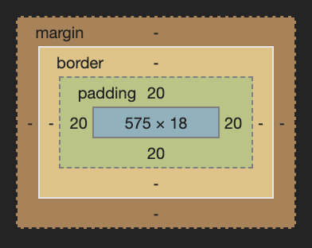
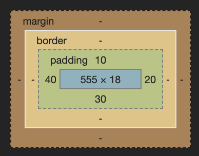
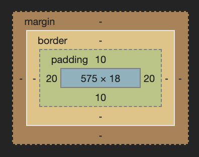
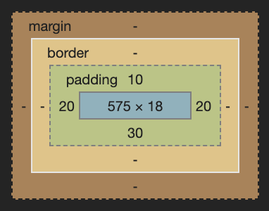

Über das Box Model haben wir schon mal gesprochen aber es gibt noch ein paar Tricks, die ich dir noch gern beibringen würde.
Zur Erinnerung: Das Box Model sagt im Prinzip, dass Block Elemente wie eine Box sind und sie können spezielle Eigenschaften haben:
width: Breiteheight: Höhemargin: Abstand nach außenborder: Rahmenliniepadding: Abstand nach innenIch glaub da brauch ich eh nicht viel dazu sagen. Manchmal möchte man, dass Dinge eine bestimmte Höhe oder Breite haben udn da kann man das damit festlegen.
Bei Margin und Padding gibts ein paar Tricks, denn wenn du dir das Foto oben ansiehst dann siehst du, dass dieser Abstand in alle Richtungen gemacht werden kann. Also oben und unten sowie rechts und links. Und es gibt hier verschiedene Schreibweisen, die unterschiedliche Sachen bewirken.
Hier erzeugen wir einen gleichmäßigen Abstand in alle Richtungen von 20 Pixeln.
padding: 20px;

Hier definieren wir für eine bestimmte Richtung unterschiedliche Werte.
padding-top: 10px;
padding-right: 20px;
padding-bottom: 30px;
padding-left: 40px;
Das gleiche, was wir oben machen, kann man aber auch in kurzer Schreibweise (Shorthand) in einer Zeile schreiben. Wichtig ist, dass man hier oben beginnt, dann rechts, dann unten, dann links.
So erzeugen wir einen Abstand von:
padding: 10px 20px 30px 40px;

Man kann aber auch oben & unten und links & rechts gleichzeitig ansprechen. So erzeugen wir oben & unten einen Abstand von 10 Pixeln und links und rechts einen Abstand von 20 Pixeln.
padding: 10px 20px;

Und weils gar so schön ist gibts noch eine dritte Schreibweise, mit der man einen eigenen Abstand für oben, einen für links & rechts und einen für unten festlegen kann.
padding: 10px 20px 30px;

Manchmal möchte man, dass Dinge einen Rahmen haben und das kann man mit dem Border Attribut machen. Dieses Attribut besteht aus drei Werten:
border: 1px solid red;
Die Schreibweise von oben ist wieder eine Shorthand Schreibweise. Das kann man alles auch einzeln schreiben.
border-width: 1px;
border-style: solid;
border-color: red;
Und hier ist es auch wieder so, dass man den Rahmen auch nur für eine bestimmte Seite definieren kann.
border-right: 2px dotted blue;
Auch da kann man das wieder alles einzeln schreiben
border-right-width: 2px;
border-right-style: dotted;
border-right-color: blue;
Zusätzlich davon, kann man auch Boxen mit abgerundeten Ecken erzeugen, indem man den border-radius verwendet.
border: 2px solid green;
border-radius: 5px;
Und das coole ist, dass man einen Kreis erzeugen kann, wenn man den border-radius auf 50% stellt.